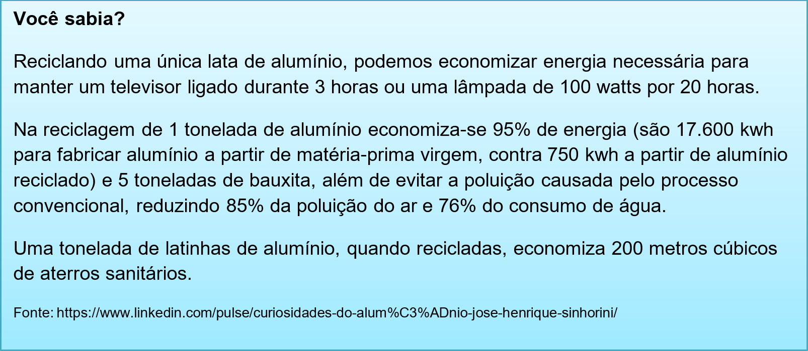
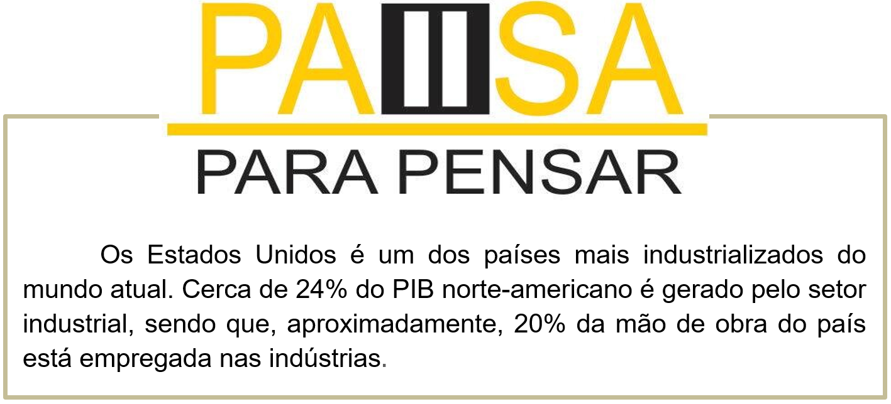
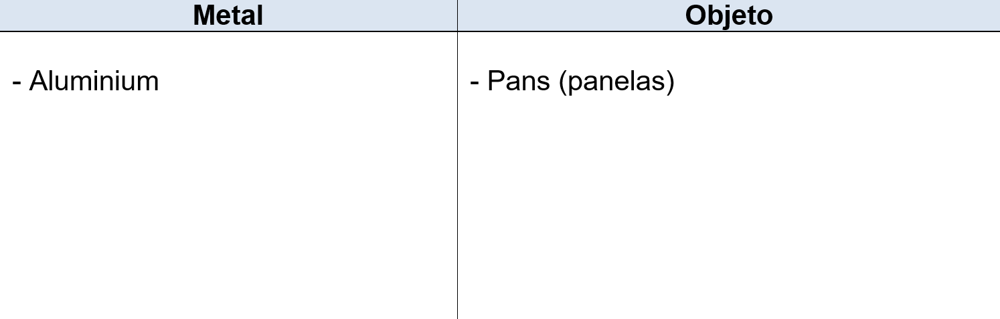

Capítulo 3: Metallurgy – Metalúrgica
Durante a Segunda Guerra Mundial que a personagem “Rosie the Riveter”, ou “Rosie, a Rebitadeira”, se tornou um ícone cultural nos Estados Unidos. Ela simbolizava as mulheres que passaram a trabalhar na indústria metalúrgica, nos até então considerados “trabalhos de homem”, enquanto eles faziam a guerra na Europa.
Com o fim da guerra e a volta dos soldados aos EUA, o governo do país abandonou a campanha que utilizava Rosie e o slogan que dizia às mulheres “Nós podemos!” e passou a incentivá-las a abandonar os empregos – e a renda e a liberdade financeira – que elas tinham conquistado nos anos anteriores. Desde então, a metalurgia nos EUA segue dominada por homens – eles são 87% dos empregados no setor no país.
Vamos analisar a frase destaque: WE CAN DO IT! Essa frase tem como significado: Nós podemos fazer. Nosso estudo gramatical dessa unidade será o verbo modal CAN. Vamos expandir nosso vocabulário metalúrgico e aplicar nossa gramática.
Vocabulário – tipos de metais utilizados na metalurgia
aluminium > alumínio
brass > bronze
bronze> bronze
copper > cobre
gold > ouro
iron > ferro
lead > chumbo
magnesium > magnésio
mercury > mercúrio
nickel > níquel
platinum > platina
silver > prata
steel > aço
tin > lata
uranium > urânio
zinc > zinco


Biblioteca
Esse dicionário é voltado totalmente para o vocabulário de metalurgia. Nele há expressões de uso diário e de fácil utilização.
Assista ao vídeo e aprenda mais sobre a indústria americana
Reconstruindo o conhecimento – Verbo modal CAN
O verbo can geralmente significa poder e/ou conseguir e é usado para indicar várias situações:
Possibilidade
Capacidade/habilidade
Permissão
Pedido
Quando usar o verbo can?
Can é usado quando queremos expressar ideia e capacidade/habilidade, possibilidade, permissão e pedido.
Ele é um dos principais modal verbs (verbos modais) da língua inglesa. O verbo modal can tem a função de auxiliar o verbo principal na frase.
Exemplos:
She can speak Chinese. (Ela sabe falar chinês.) – CAPACIDADE
It can happen with anyone. (Isso pode acontecer com qualquer pessoa.) - POSSIBILIDADE
You can play outside. (Você pode brincar lá fora.) - PERMISSÃO
Can I talk to the director? – (Posso falar com o diretor?) – PEDIDO
Como usar o verbo can?
O verbo can é sempre acompanhado do verbo principal no infinitivo. Ele pode ser usado para construir frases afirmativas, negativas e interrogativas.
Exemplos com o verbo dance
O que aprendi
• Utilizar o verbo modal can;
• Aprendemos vocabulário de metalurgia;
• Expandimos conhecimentos sobre o alumínio;
• Fizemos estudos culturais sobre a indústria americana.
Praticando
Selecione cinco metais usando na metalurgia e diga quais objetos é produzido.

Leia o trecho e diga o que o soldador CAN (pode) ou CAN’T (não pode fazer)
The solder can clean the metal, apply flux to bottom pieces of metal, apply silver hard solder chips, heat metal until soldered, place soldered metal on top of other cleaned metal, reheat both pieces of metal until silver line appears around the edges. He can’t overthrow things. He can cut metal precisely.
The solder can clean the metal.
_____________________________
_____________________________
_____________________________
Leia os verbos, e elabore frases pessoais. Afirmando ou negando o que você pode (can) ou não (can’t) fazer.
write (escrever) – speak (falar) – drive (dirigir carro) – read (ler) – see (olhar)
I can speak English.
_____________________________
_____________________________
_____________________________